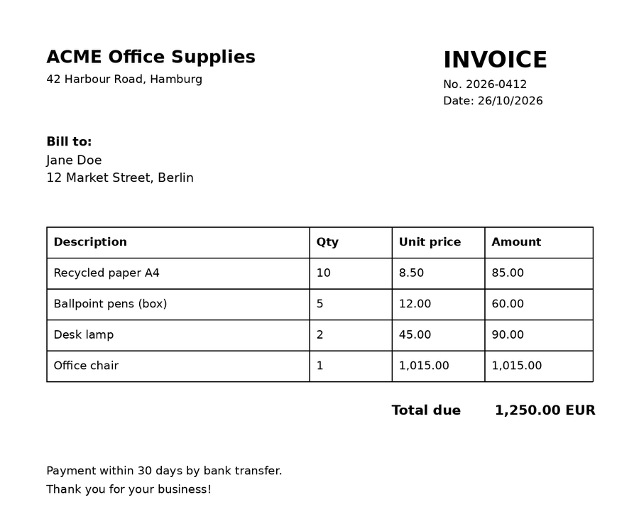
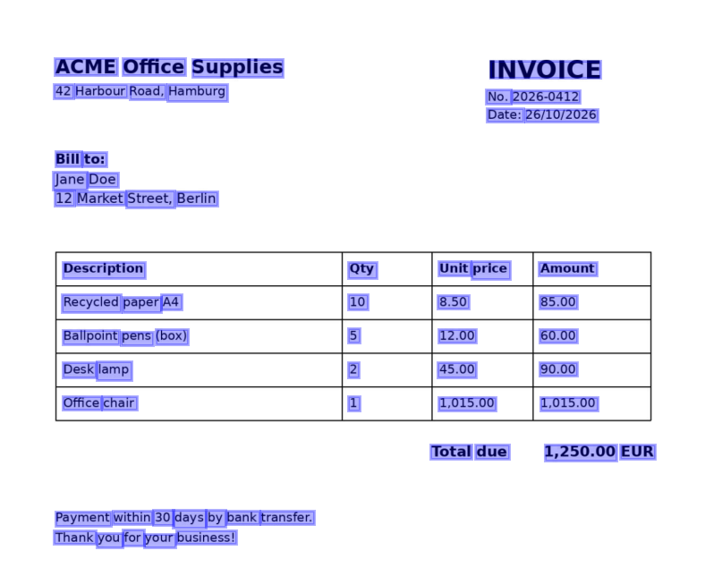

Quickstart#
This page takes you from a PDF to structured text in a few lines of code. You need docTR installed
(pip install python-doctr, see Installation) and a document to read.
Tip
No document at hand? Download the sample invoice used on this
page and save it as invoice.pdf next to your script: you will get exactly the outputs shown below.


1. Load the document#
DocumentFile turns PDFs, images and web pages into a list of pages:
from doctr.io import DocumentFile
pages = DocumentFile.from_pdf("invoice.pdf")
# or: DocumentFile.from_images(["page1.jpg", "page2.jpg"])
2. Run OCR#
ocr_predictor() builds a complete pipeline: a text detection model followed by a text
recognition model. With pretrained=True, the weights are downloaded on first use and cached.
from doctr.models import ocr_predictor
predictor = ocr_predictor(pretrained=True)
result = predictor(pages)
That’s it: result is a Document holding every word, its position and its confidence.
3. Get the text#
render() returns the text of the whole document, in reading order:
print(result.render())
ACME Office Supplies
INVOICE
42 Harbour Road, Hamburg
No. 2026-0412
Date: 26/10/2026
Bill to:
Jane Doe
12 Market Street, Berlin
...
4. Explore the structure#
The result mirrors the document: pages contain blocks, blocks contain lines, lines contain words. Printing it shows the tree:
print(result)
Document(
(pages): [Page(
dimensions=(1684, 1191)
(blocks): [Block(
(lines): [
Line(
(words): [
Word(value='ACME', confidence=1.0),
Word(value='Office', confidence=1.0),
Word(value='Supplies', confidence=1.0),
]
),
Line(
(words): [Word(value='INVOICE', confidence=1.0)]
),
...
Every element is a regular Python object, so you can walk the tree to get the words with their positions:
for page in result.pages:
for block in page.blocks:
for line in block.lines:
for word in line.words:
(xmin, ymin), (xmax, ymax) = word.geometry
print(
f"{word.value:<10} conf={word.confidence:.2f} box=({xmin:.3f}, {ymin:.3f}, {xmax:.3f}, {ymax:.3f})"
)
ACME conf=1.00 box=(0.071, 0.054, 0.160, 0.071)
Office conf=1.00 box=(0.169, 0.054, 0.258, 0.071)
Supplies conf=1.00 box=(0.269, 0.055, 0.399, 0.073)
INVOICE conf=1.00 box=(0.697, 0.057, 0.855, 0.074)
...
Geometries are relative to the page size: ((xmin, ymin), (xmax, ymax)) with values between 0 and 1.
Coordinates shows how to convert them to pixels.
5. Visualize the predictions#
With the viz extra installed (pip install "python-doctr[viz]"), show() overlays the
predictions on the pages in an interactive window:
result.show()


6. Export the results#
Turn the result into the format your application needs:
import json
with open("invoice.json", "w") as f:
json.dump(result.export(), f)
The export is a nested dictionary with the same structure as the Document (pages → blocks → lines → words).
markdown = result.export_as_markdown()
html = result.export_as_html()
# One (bytes, ElementTree) pair per page
xml_pages = result.export_as_xml()
Exporting results covers every format and its options.
7. Go further: layout & tables#
Add detect_tables=True and docTR also finds the layout of the page and reconstructs its tables. Here is the
Markdown export of the same invoice:
predictor = ocr_predictor(pretrained=True, detect_tables=True)
result = predictor(pages)
print(result.export_as_markdown())
## ACME Office Supplies
42 Harbour Road, Hamburg
## Bill to:
Jane Doe
12 Market Street, Berlin
INVOICE
No. 2026-0412
Date: 26/10/2026
| Description | Qty | Unit price | Amount |
| --- | --- | --- | --- |
| Recycled paper A4 | 10 | 8.50 | 85.00 |
| Ballpoint pens (box) | 5 | 12.00 | 60.00 |
| Desk lamp | 2 | 45.00 | 90.00 |
| Office chair | 1 | 1,015.00 | 1,015.00 |
Total due
1,250.00 EUR
...
Prefer the command line?
The doctr-cli command runs the same pipeline without writing any code:
doctr-cli --input_path invoice.pdf --detect_tables --output invoice.md
Next steps#
Predictors, the Document tree, coordinates and scores.
Choose the models and tune the pipeline to your documents.
Read skewed scans, photos and upside-down pages.